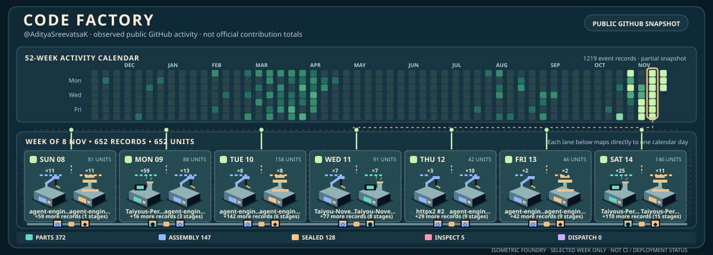

Public GitHub activity · @AdityaSreevatsaK
Code Factory
Explore @AdityaSreevatsaK’s observed public GitHub activity in a contribution-style calendar. Select a week using the chart or keyboard; its seven day cells directly power the miniature factory below. You can also switch to the synthetic demo. This is a partial public-events snapshot, not the official GitHub contribution calendar.
Loading the shared demonstration fixture…
On mobile, choose Readable detail and scroll the factory horizontally to inspect individual machines.

PUBLIC ACCOUNT SNAPSHOT · Coloured squares represent observed event/stage units, not official GitHub contribution totals. The highlighted column powers the seven corresponding day lanes. PR opening and merging are distinct events, and a sealed crate is not a deployment. No live GitHub requests, private repository data or API credentials are used by this preview.
Day-by-day ledger
The ledger explains exactly which input records power the seven workshop lanes.
- Loading demo activity…
Factory vocabulary
Commit: parts
PR opened: assembly
PR merged: sealing
Issue opened: inspection
Release: dispatch
Documentation and export instructions. The full scene exports to a standalone 1200 × 430 SVG for use as a static GitHub README image.